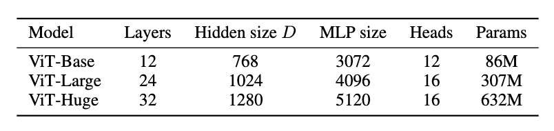
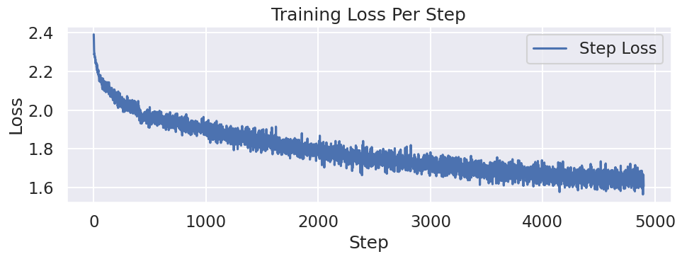
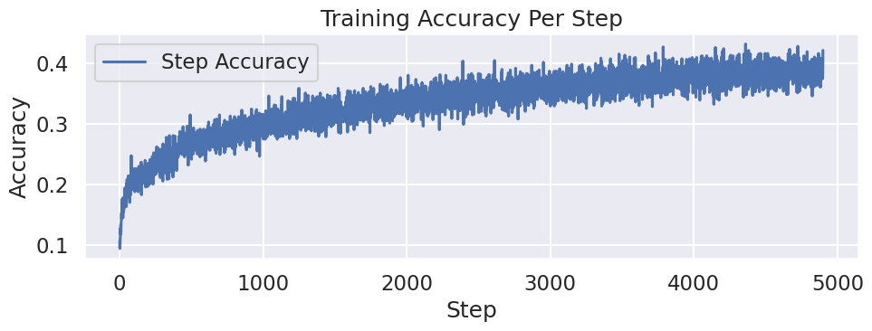
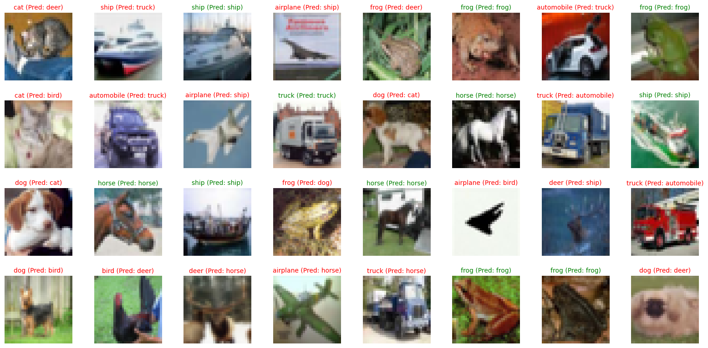
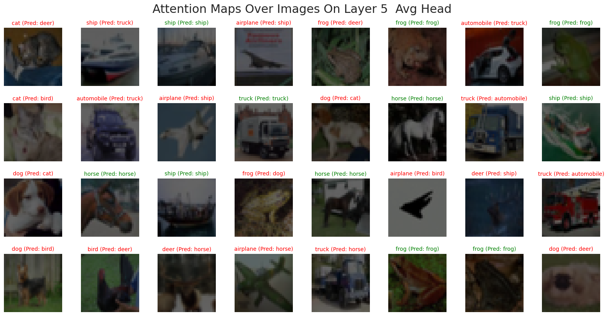
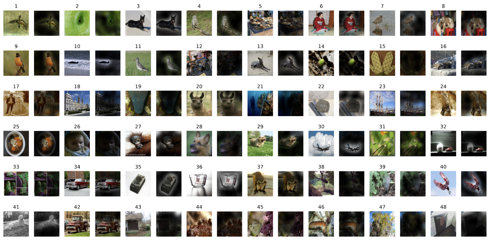
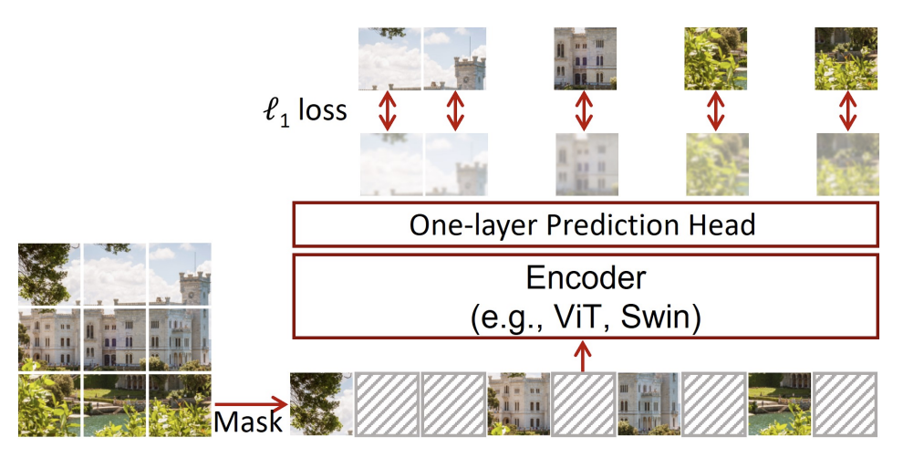

02: AN IMAGE IS WORTH 16X16 WORDS: TRANSFORMERS FOR IMAGE RECOGNITION AT SCALE (Vision-Transformer )
Patch Embedding、Position Embedding、[CLS] Token 以及 Transformer 编码器块，探讨了 ViT 相较于传统 CNN 的归纳偏置差异(Inductive Bias)，并展示了 ViT 在大规模数据集上的优异表现。
1 Preliminary
在阅读本章之前，我们需要先了解一下什么是Transformer(Vaswani et al. 2023)。 如果有不熟悉的同学，欢迎阅读我们 100 Paper with Code 系列的第一篇:01: Attention is all you need (Transformer)
2 Vision-Transformer
在了解了什么是Transformer之后，我们来看看如何将Transformer应用于Computer Vision。Vision Transformer（ViT）(Dosovitskiy et al. 2021) 是一个将Transformer架构应用于图像分类的模型。它的核心思想是将图像划分为小块（patches），然后将这些小块视为序列数据，类似于处理文本数据。
它的整体架构以及工作流程，如下图所示:

我们可以看到，ViT的整体流程可以分为以下几个步骤:
- 图像切分（Patchify）: 将输入图像划分为若干大小相同的小块（Patch），并展开为一维序列。
- 线性映射（Linear Projection）: 使用Linear Layer将每个 Patch 映射为固定维度的隐藏向量（Hidden Embedding）。
- 加入
[CLS]标记: 在序列开头添加一个特殊的[CLS]token，用于表示整张图像的全局语义。 - 位置编码: 为每个向量添加可学习的位置嵌入（Position Embedding），保留空间位置信息。
- Transformer Encoder: 将上述序列输入 Transformer Encoder，以捕捉全局依赖关系。
- 分类头（MLP Head）: 最终通过一个多层感知机（MLP）分类头输出图像所属的类别。
相对于 Transformer ，ViT 的主要区别在于:
- 增加了一个 Patchify 步骤，将图像划分为若干小块并转化为序列输入；
- 将原本的正余弦位置编码（Sinusoidal position embedding）替换为可学习的位置嵌入（Learned position embedding）；
- 在最后额外添加了一个分类头（Classification head），用于完成图像分类任务。
我们之前已经学习过了什么是Transformer建议忘记了的同学再去回顾一下，我们就不多重复了。 我们首先来看如何进行Patch Embedding
2.1 Patch Embedding
在Transformer这一篇，我们了解到，它是作用于Sequence Modeling的，很显然，Image不是 Sequence的, 它有长\(H\)和宽\(W\)。很直观的第一种想法就是，将图片直接展开，从二维 \((3, H, W)\) 展开成一维的 \((3 \times H \times W)\). 这样我们就得到的图片的 Sequence Model。如下图 Figure 2 所示

这种方法有一种明显的问题就是:Sequence的长度太长。 举个例子，对于 \(3\times 256 \times 256\) 的图片，我们有 \(256 \times 256 = 65,336\) 个tokens，通过这种方法，所需要的训练时长很长 (在Transformer 这一节，我们了解过，Attention的时间复杂度是 \(\mathcal{O}(n^{2}d)\))。 除了这个问题，另一个问题是:
所以我们很自然的想到:如果把相邻的pixels和在一组，组成一个patch，这样不就既减少了tokens的数量，又用到了pixel之间的correlation。这就是Vision Transformer的Patch Embedding组件。
The standard Transformer receives as input a 1D sequence of token embeddings. To handle 2D images, we reshape the image \(x \in \mathbb{R}^{H \times W \times C}\) into a sequence of flattened 2D patches\(x \in \mathbb{R}^{N \times (P^{2} \times C)}\), where (\(H, W\)) is the resolution of the original image, \(C\) is the number of channels, (\(P, P\)) is the resolution of each image patch, and \(N = HW/P^{2}\) is the resulting number of patches, which also serves as the effective input sequence length for the Transformer. The Transformer uses constant latent vector size \(D\) through all of its layers, so we flatten the patches and map to \(D\) dimensions with a trainable linear projection. We refer to the output of this projection as the patch embeddings. An Image is Worth 16x16 Words- Transformers for Image Recognition at Scale, p.3
有了Patch之后，我们就将图片从 \((H, W, C)\) 变成了 \((N, P, P, C)\)， 其中 \(N = \frac{H \times W}{P^{2}}\)。 我们来看看代码怎么实现:
# Load Image and resize it to certain size
image_path = IMAGE_PATH
img_bgr = cv2.imread(image_path)
img_resized = cv2.resize(img_bgr, (IMAGE_SIZE, IMAGE_SIZE), interpolation=cv2.INTER_AREA)
img = cv2.cvtColor(img_resized, cv2.COLOR_BGR2RGB)
# Patchify
patches = einops.rearrange(
img, "(h ph) (w pw) c -> (h w) ph pw c", ph=PATCH_SIZE, pw=PATCH_SIZE
) 通过这个Patchify之后，我们将图片分成了 \(\left( \frac{H}{P} \times \frac{W}{P}, P, P, C \right)\) 个Patches


接下来，我们将每个Patch 展开成一个向量，变成 \((N, P^{2} \times C)\)，然后传入一个Linear Layer，将其映射到一个隐藏空间，变成 \((N, d_{model})\)。 这样，我们就得到了Transformer可以接受的输入。
flat_patch = einops.rearrange( patches, "n ph pw c -> n (ph pw c)")
mlp = nn.Linear(PATCH_SIZE * PATCH_SIZE * 3, d_model)
patch_embedding = mlp(flat_patch)通过这种方法，我们就得到了Transformer可以接受的任意长度的输入。不过在实际操作中，我们并不会用以上的方式，而是用一个卷积层来实现这个Patch Embedding的过程。原因有二:
- 效率更高: 将Patchify + Flatten + Linear 合成一个卷积层，可以减少中间的内存读写，提高计算效率。
- 代码更简洁: 用一个卷积层就可以实现所有的功能，代码量更少，更易读懂。
如果我们用一个 卷积层，参数设置为:
- kernel_size = PATCH_SIZE （卷积核覆盖一个 patch）
- stride = PATCH_SIZE （不重叠地移动，相当于切 patch）
- in_channels = 3（RGB）
- out_channels = d_model
那么卷积会:
- 把输入图片分成
PATCH_SIZE x PATCH_SIZE的不重叠块（因为 stride = kernel_size）。 - 对每个 patch 做一次线性映射（因为卷积本质上就是对局部区域做加权求和，相当于 Linear）。
- 输出的 shape 自动就是 (batch, num_patches, d_model)。
这正好等价于 切 patch + flatten + Linear 的组合.
代码如下:
class PatchEmbedder(nn.Module):
def __init__(self, config: ModelConfig):
super().__init__()
self.config = config
self.num_patches_per_side = config.image_size // config.patch_size
self.num_patches = self.num_patches_per_side**2
self.proj = nn.Conv2d(
in_channels=config.num_channels,
out_channels=config.d_model,
kernel_size=config.patch_size,
stride=config.patch_size,
)
def forward(self, x: torch.Tensor):
# x: (B, C, H, W)
x = self.proj(x) # (B, D, H/P, W/P)
x = x.flatten(2) # (B, D, N)
x = x.transpose(1, 2) # (B, N, D)
return x用卷积的好处，除了可以更高效的实现Patch Embedding，代码更加简洁之外，我们还可以通过改变 stride 来使一些Patch Overlapping，获得一个多尺度的结构。（尽管这个在ViT中没有提到，但是我觉得我们可以利用这一点）
ViT 的核心改动只有两步:patchify（切块）+ embedding（线性投影），其余几乎就是原封不动的 Transformer Encoder
可以补一句点明:“ViT 原版用 non-overlap patch（更纯），后续很多工作会用 overlap/conv stem 来补 inductive bias”，把读者往后续论文自然引过去。
我们计算一下，通过这种方法，可以减少多少Tokens的数量:
- 图像大小 \(224 \times 224\)，\(P=16\) → \(N= \frac{224\times 224}{16 ^{ 2}}=196\)
- \(P=8\) → \(N= \frac{224\times 224}{8 ^{ 2}}=784\)（注意力矩阵变成 16 倍）
- 所以 patch size / token 数直接决定训练的效率
2.2 Position Encoding
将图片转化为 Transformer 的输入之后，接下来Transformer中的另一个组件就是传入 Position Information。 我们知道在Transformer 中，他们用的是 Sine-cosine position embedding，在那篇文章中，我们也提到了，还存在其他不同的Position Encoding的办法，ViT用的就是另一种办法，Learned Position Embedding。Learned Position Embedding的方法很简单，也很好理解，对于每一个位置，我们给他一个index，将这个index传入一个 Embedding Matrix， 我们就得到一个Position Embedding。不过与Token Embedding不同的是，我们会用到所有的Position，也整个matrix， 所以我们不用定index，直接定义整个Embedding，然后将它传入Transformer中。
class PosEmbedder(nn.Module):
def __init__(self, config: ModelConfig):
super().__init__()
self.position_embeddings = nn.Parameter(
torch.randn(1, (config.image_size // config.patch_size) ** 2 + 1, config.d_model)
) # +1 for cls token
self.cls_token = nn.Parameter(torch.randn(1, 1, config.d_model))
def forward(self, x: torch.Tensor):
B = x.shape[0]
cls_tokens = self.cls_token.expand(B, 1, -1)
x = torch.cat((cls_tokens, x), dim=1)
x = x + self.position_embeddings
return x为什么ViT要用Learned Position Embedding呢？在ViT这篇文章中，他们尝试过不同的Position Embedding，比如:
- No Positional Information
- 1-dimensional Positional Embedding
- 2-dimensional Positional Embedding
- Relative Positional Embedding
发现，除了No Positional Information之外，其余3种在Image Classification中的表现，都是差不多的。

论文中表示，可能是因为所需要的Position的信息较小，对于不同种类的Position Embedding的方法，学习这个Position Information的能力，都是差不多的。
We speculate that since our Transformer encoder operates on patch-level inputs, as opposed to pixel-level, the differences in how to encode spatial information is less important. More precisely, in patch-level inputs, the spatial dimensions are much smaller than the original pixel-level inputs, e.g., \(14 \times 14\) as opposed to \(224 \times 224\), and learning to represent the spatial relations in this resolution is equally easy for these different positional encoding strategies. An Image is Worth 16x16 Words- Transformers for Image Recognition at Scale, p.18
不过，尽管Position的方法不重要，但是不同的训练参数，还是会影响到学习到的Position Information, 下图所示:

2.2.1 Position Interpolation
当我们有了一个Pre-Training的模型，我们想用它Fine-Tuning到一个不同图片大小的数据库，我们改怎么做呢?
第一个方法当然是，Resize 我们的图片，到ViT Pre-training的图片大小，但是，这个能导致较大的图片，失去很多细节。如果我们想保持图片的大小不变，同时让模型训练，我们就需要Extend Position Encoding，因为当Patch Size不变，图片大小变了的话，产生的Number of Patches 也是会改变的，我们需要做的是: 找到一种方法，增大或者减小Position的数量。 这就是所谓的Position Interpolation。
The Vision Transformer can handle arbitrary sequence lengths (up to memory constraints), however, the pre-trained position embeddings may no longer be meaningful. We therefore perform 2D interpolation of the pre-trained position embeddings, according to their location in the original image An Image is Worth 16x16 Words- Transformers for Image Recognition at Scale, p.4
我们来看看代码是怎么实现Position Interpolation的:
def interpolate_pos_encoding(self, x, w, h):
npatch = x.shape[1] - 1
N = self.pos_embed.shape[1] - 1
if npatch == N and w == h:
return self.pos_embed
class_pos_embed = self.pos_embed[:, 0]
patch_pos_embed = self.pos_embed[:, 1:]
dim = x.shape[-1]
w0 = w // self.patch_embed.patch_size
h0 = h // self.patch_embed.patch_size
patch_pos_embed = F.interpolate(
patch_pos_embed.reshape(
1,
int(math.sqrt(N)),
int(math.sqrt(N)),
dim
).permute(0, 3, 1, 2),
scale_factor=(w0 / math.sqrt(N), h0 / math.sqrt(N)),
mode='bicubic',
)
patch_pos_embed = patch_pos_embed.permute(0, 2, 3, 1).view(1, -1, dim)
return torch.cat((class_pos_embed.unsqueeze(0), patch_pos_embed), dim=1)
2D interpolation of the pre-trained position embeddings
- ViT 在预训练时，通常用固定输入分辨率（比如 224×224） → 生成固定数量的 patch（比如 16×16 patch → 196 个 patch）。
- 但在 fine-tuning 时，输入图片可能大小不一样，比如 384×384，这时 patch 数量就变了。
- 这会导致原本的 位置编码 (position embeddings) 和新的 patch 数量对不上。
- 解决办法:对预训练好的位置编码做 二维插值 (2D interpolation)，根据 patch 在原图中的空间位置，把位置编码拉伸/缩放到新的分辨率。
2.3 [CLS] Tokens & MLP Head
在 Transformer 这一节，我们了解到:每输入一个token，Transformer会输出对应的token。这就是说，对于每个patch，Transformer会输出对应的Tokens，那么，我们应该选择哪一个token作为我们图片的表示呢。 BERT (Devlin et al. 2019)， 用了一个 [CLS], 来表示一个句子。同理，我们也可以添加一个 [CLS] token, 来表示一张图片。同时，对于 [CLS] token, 我们也要在给他一个表示位置的信息。这就是为什么在Position Encoding上，我们有 (config.image_size // config.patch_size) ** 2 + 1, 位置信息，其中 +1 就是 [CLS] 的位置信息。
总结一下 [CLS] token 的作用就是用来聚合所有的Patch的消息，然后用来Image 的Representation。
我们想一下，除了加一个 [CLS] token，之外，我们还有其他办法来表示图片吗。有一种很自然的方法就是，将所有的patch的消息收集起来，然后去一个平均值来表示这个图片。类似于传统的ConvNet(e.g. ResNet) 我们可以通过 AvgPooling 来实现。 不过论文中提到， 对于两种不同的Image Representation，需要有不同的Learning Rate 来训练这个网络。 通过下图，我们看到，不用的收集信息的方法，需要不同的learning rate 
结构上二者都可行，但需要不同 LR / recipe。 实践里很多实现默认用 CLS（与 BERT 对齐、下游更统一），也有用 GAP 的变体比如我们接下来要学的 Swin Transformer (Liu et al. 2021)
有了Image Represent之后，我们只需要将这个传入一个简单的MLP，我们就可以得到一个Classifier。MLP的输入是hidden dim，输出则是我们Number of Classes。不同的Index 表示不同的Classses。
An initial attempt at using only image-patch embeddings, globally average-pooling (GAP) them, followed by a linear classifier—just like ResNet’s final feature map—performed very poorly. However, we found that this is neither due to the extra token, nor to the GAP operation. Instead, the difference in performance is fully explained by the requirement for a different learning-rate, An Image is Worth 16x16 Words- Transformers for Image Recognition at Scale, p.17
Both during pre-training and fine-tuning, a classification head is attached to \(\mathrm{z}_{L}^{0}\). The classification head is implemented by a MLP with one hidden layer at pre-training time and by a single linear layer at fine-tuning time. An Image is Worth 16x16 Words- Transformers for Image Recognition at Scale, p.3
class MLPHead(nn.Module):
def __init__(self, config: ModelConfig):
super().__init__()
self.fc1 = nn.Linear(config.d_model, config.d_model)
self.fc2 = nn.Linear(config.d_model, config.num_classes)
self.dropout = nn.Dropout(config.dropout_rate)
def forward(self, x: torch.Tensor):
cls = x[:, 0, :]
cls = self.dropout(F.relu(self.fc1(cls)))
cls = self.fc2(cls)
return cls2.4 Transformer Encoder Block
至此，我们已经讲完了ViT, 与Transformer的主要不同之处。接下来，就是Transformer的Encoder。 
这部分，和Transformer原本的Encoder很类似，只不过有几处不同:
- Pre-Norm: 在ViT同，输入先进行一个LayerNorm，然后在传入MHA或者MLP中，反观在Transformer原本的Encoder中，我们是先将MHA或者MLP的输出与输入加在一起，之后再进行一个Normalization。这叫做Post-Norm
- MLP的实现:在Transformer Encoder中，用的是
ReLU, 而在ViT中，用的是GELU
除此之外，其他部分都是一样的。一下是ViT Encoder的实现:
class EncoderBlock(nn.Module):
def __init__(self, config: ModelConfig):
super().__init__()
self.mha = MHA(config)
self.ffn = FFN(config)
self.norm1 = LayerNorm(config.d_model)
self.norm2 = LayerNorm(config.d_model)
def forward(self, x: torch.Tensor):
attn, _ = self.mha(self.norm1(x))
x = x + attn
x = x + self.ffn(self.norm2(x))
return x2.4.1 Multi-Heads Attention
还有一个就是Attention模块，Attention模块与Transformer中的是一模一样，在这里就不过多的赘述了。
class MHA(nn.Module):
def __init__(self, config: ModelConfig):
super().__init__()
self.num_heads = config.num_heads
self.d_model = config.d_model
assert config.d_model % config.num_heads == 0, "d_model must be divisible by num_heads"
self.d_k = config.d_model // config.num_heads
self.qkv_linear = nn.Linear(config.d_model, config.d_model * 3)
self.out_linear = nn.Linear(config.d_model, config.d_model)
self.attention_dropout = nn.Dropout(config.attention_dropout_rate)
def forward(self, x: torch.Tensor):
B, N, C = x.shape # Batch size, Number of tokens, Embedding dimension
q, k, v = (
self.qkv_linear(x).reshape(B, N, 3, self.num_heads, self.d_k).permute(2, 0, 3, 1, 4).unbind(0)
)
scores = torch.matmul(q, k.transpose(-2, -1)) / torch.sqrt(
torch.tensor(self.d_k, dtype=torch.float32)
) # (B, num_heads, N, N)
attn_weight = torch.softmax(scores, dim=-1) # (B, num_heads, N, N)
attn = self.attention_dropout(attn_weight)
context = torch.matmul(attn, v) # (B, num_heads, N, d_k)
context = context.transpose(1, 2).reshape(B, N, C) # (B, N, d_model)
out = self.out_linear(context) # (B, N, d_model)
return out, attn_weight2.5 CNN vs. ViT: Inductive bias
至此，我们已经介绍完了Vision Transformer，我们来从Inductive Bias的方面，看看 CNN 和 ViT 有什么不同
在深度学习里，Inductive Bias（归纳偏置）是指模型在学习之前，因结构或设计而自带的假设或先验 ，比如 Convolution Layer, 它就是假设相邻的pixel之间，是有一定联系的，因此可以用一个Kernel来将学习这些关系。
对于图像来说，常见的先验就是:
- 局部像素是相关的（locality）
- 相邻区域的模式有规律（2D neighborhood）
- 物体无论出现在图像哪里，识别方式应该一样（Translation Equivariance）
那么，CNN 的结构怎么体现这些偏置？ 1. 局部性 (Locality): - 卷积核（例如 3×3）只和局部像素打交道，而不是全图。 - 这意味着模型“相信”图像的重要特征来自局部邻域，而不是遥远区域。 2. 二维邻域结构 (2D structure): - 卷积操作是沿着 图像的二维网格进行的，天然利用了图像的行列结构。 - 这和文本（序列 1D）不一样，CNN 明确知道输入是 2D 排列的。 3. 平移等变性 (Translation equivariance): - 卷积核的参数在整张图共享。 - 所以猫在左上角还是右下角，卷积核都能检测到“猫耳朵”。 - 这让 CNN 自动具有“识别位置无关”的能力。
这些性质不是模型通过训练学出来的，而是因为卷积操作本身的数学结构就带来的（也是我们人为设计的）:
- kernel 的局部连接 → 局部性
- kernel 滑动覆盖全图 → 平移等变性
- 操作在二维空间定义 → 邻域结构
所以，哪怕我们不给 CNN 喂太多数据，它也会利用这些偏置去学习特征。
而对于 ViT 来说，其归纳偏置非常弱，几乎完全依赖数据和训练来学习，不过它也有利用了一些图片的Inductive Bias:
- Patch 切分 (Patchification) • ViT 唯一的“图像先验”之一就是把输入图片切成 patch。 • 这一操作隐含了:图像是一个二维结构，可以被分块处理。
- 位置编码 (Positional Embeddings) • Transformer 本身只处理序列，没有空间结构的概念。 • ViT 通过加位置编码告诉模型 patch 在图像中的相对位置。 • 在输入分辨率变化时，会做 二维插值 (2D interpolation) 来适配，这也是一种人工引入的 2D 先验。
- 其他部分 • 除了以上两点，ViT 的注意力机制是 全局的 (global)，没有局部性约束。 • 没有像 CNN 那样内置的平移等变性或局部邻域结构。
这样就是为什么ViT需要更多数据和计算才能学到同样的空间归纳规律。
2.6 ViT Model Variants
ViT 有3种不同的基本变形， 如下图所示

ViT的名字通常表示为: ViT-L/16: 意思是，ViT-Large，然后用的16 Patch Size。 需要注意的是，Patch Size越大，我们得到的tokens就越少，也就是需要更少的训练时实现, 但通常需要更大的图片来训练。
2.7 Experiment
我们先来看看原论文是如何训练的: - 预训练（所有模型，包括 ResNet）:作者统一使用 Adam（\(\beta_{1} = 0.9, \beta_{2}=0.999\)），batch size = 4096，并使用较大的 weight decay = 0.1。作者指出这对所有模型的迁移表现都有帮助 - 学习率策略:采用线性 warmup + 线性 decay（细节见 Appendix B.1）。 - 微调（fine-tuning）:对所有模型统一改用带 momentum 的 SGD，batch size 512. - 权重平均:同时使用 Polyak averaging（指数滑动平均，系数 0.9999）以进一步提升效果。
接下来，我们来训练我们定义的ViT。具体的代码可以在 这里 查看。 ### Dataset 我们用CIFAT-10的训练集来训练ViT。
我们之前提到了ViT要在大规模的数据集上才可以发挥它的能力，由于资源有限，我们只在这展示ViT的训练流程，在了解了这个训练流程之后，很容易拓展到其他的大数据集。
IMG_MEAN = [0.4914, 0.4822, 0.4465]
IMG_STD = [0.2470, 0.2435, 0.2616]
IMG_SIZE = 32
data_transform = transforms.Compose(
[
transforms.Resize(
(IMG_SIZE, IMG_SIZE),
interpolation=transforms.InterpolationMode.BILINEAR,
),
transforms.RandomHorizontalFlip(),
transforms.ToTensor(),
transforms.Normalize(IMG_MEAN, IMG_STD),
]
)
train_dataset = torchvision.datasets.CIFAR10(
root=train_config.data_dir, download=True, train=True, transform=data_transform
)
if train_config.debug:
train_dataset = torch.utils.data.Subset(train_dataset, range(1000))
dataloader = DataLoader(
train_dataset,
batch_size=train_config.batch_size,
shuffle=True,
num_workers=4,
pin_memory=True if train_config.device.type == "cuda" else False,
)2.7.1 Optimizer & Loss Function
论文中应用了 Adam Optimizer，我们在此也用Adam。因为我们训练的是Image Classification Task，所以损失函数是是Cross Entropy Loss:
2.7.2 Result


我们来看看，这个Toy ViT 究竟训练的怎么样:
N_ROWS = 4
N_COLS = 8
N_IMGS = N_ROWS * N_COLS
test_dataset = torchvision.datasets.CIFAR10(
root=train_config.data_dir,
download=True,
train=False,
)
IDX_TO_CLASS = {v: k for k, v in test_dataset.class_to_idx.items()}
org_imgs, true_labels = test_dataset.data[:N_IMGS], test_dataset.targets[:N_IMGS]
transformed_imgs = torch.stack([data_transform(Image.fromarray(img)) for img in org_imgs])
pred_labels = model(tensor_to_device(transformed_imgs, device=train_config.device)).argmax(dim=1).cpu()
fig, axes = plt.subplots(N_ROWS, N_COLS, figsize=(N_COLS * 2, N_ROWS * 2))
for i in range(N_ROWS):
for j in range(N_COLS):
idx = i * N_COLS + j
axes[i, j].imshow(org_imgs[idx])
axes[i, j].axis("off")
if true_labels[idx] == pred_labels[idx].item():
axes[i, j].set_title(
f"{IDX_TO_CLASS[true_labels[idx]]} (Pred: {IDX_TO_CLASS[pred_labels[idx].item()]})",
fontsize=10,
color="green",
)
else:
axes[i, j].set_title(
f"{IDX_TO_CLASS[true_labels[idx]]} (Pred: {IDX_TO_CLASS[pred_labels[idx].item()]})",
fontsize=10,
color="red",
)
plt.tight_layout()
plt.show()
我们也可以看看Attention Map的
N_ROWS = 4
N_COLS = 8
N_IMGS = N_ROWS * N_COLS
test_dataset = torchvision.datasets.CIFAR10(
root=train_config.data_dir,
download=True,
train=False,
)
IDX_TO_CLASS = {v: k for k, v in test_dataset.class_to_idx.items()}
org_imgs, true_labels = test_dataset.data[:N_IMGS], test_dataset.targets[:N_IMGS]
transformed_imgs = torch.stack([data_transform(Image.fromarray(img)) for img in org_imgs]).to(
train_config.device
)
# pred_labels = model(tensor_to_device(transformed_imgs, device=train_config.device)).argmax(dim=1).cpu()
TARGET_LAYER = 5 # 0-based index
HEAD = 2
GAMMA = 0.7
FLOOR = 0.15
def to_vit_attention_vis(img_uint8, attn_map, gamma=0.7, floor=0.15):
"""
gamma: >0, smaller -> sharper spotlight
floor: how visible the dark region is (0 = pure black background)
"""
img = img_uint8.astype(np.float32) / 255.0
# normalize attention to [0,1]
a = attn_map.astype(np.float32)
a = a - a.min()
a = a / (a.max() + 1e-6)
# make it more "spotlight-like"
a = a**gamma # sharpen
a = floor + (1 - floor) * a # keep some visibility outside
a = np.clip(a, 0, 1)
return img * a[..., None] # darken outside attention
model.eval()
x = model.backbone.patch_embedder(transformed_imgs)
x = model.backbone.pos_embedder(x)
for i in range(TARGET_LAYER):
x = model.backbone.encoder_layers[i](x)
_, attn_weights = model.backbone.encoder_layers[TARGET_LAYER].mha(
model.backbone.encoder_layers[TARGET_LAYER].norm1(x)
)
if HEAD >= 0:
attn_weights = attn_weights[:, HEAD, 0, 1:] # (B, N)
else:
attn_weights = attn_weights.mean(dim=1)[:, 0, 1:] # (B, N)
# Reshape attention weights to (B, H, W)
num_patches_per_side = model_config.image_size // model_config.patch_size
attn_maps = attn_weights.reshape(-1, num_patches_per_side, num_patches_per_side) # (B, H, W)
# Upsample attention maps to image size
attn_maps_upsampled = F.interpolate(
attn_maps.unsqueeze(1),
size=(model_config.image_size, model_config.image_size),
mode="bilinear",
align_corners=False,
).squeeze(1) # (B, H, W)
# Move attention map to CPU for visualization
attn_maps_upsampled = attn_maps_upsampled.cpu().detach().numpy()
# Visualize Overlaid Attention Maps
fig, axes = plt.subplots(N_ROWS, N_COLS, figsize=(N_COLS * 2, N_ROWS * 2))
for i in range(N_ROWS):
for j in range(N_COLS):
idx = i * N_COLS + j
vis = to_vit_attention_vis(
org_imgs[idx],
attn_maps_upsampled[idx],
gamma=GAMMA,
floor=FLOOR,
)
axes[i, j].imshow(vis)
axes[i, j].axis("off")
if true_labels[idx] == pred_labels[idx].item():
axes[i, j].set_title(
f"{IDX_TO_CLASS[true_labels[idx]]} (Pred: {IDX_TO_CLASS[pred_labels[idx].item()]})",
fontsize=10,
color="green",
)
else:
axes[i, j].set_title(
f"{IDX_TO_CLASS[true_labels[idx]]} (Pred: {IDX_TO_CLASS[pred_labels[idx].item()]})",
fontsize=10,
color="red",
)
plt.tight_layout()
plt.suptitle(
f"Attention Maps Over Images On Layer {TARGET_LAYER} {'Head ' + str(HEAD) if HEAD >= 0 else 'Avg Head'}",
y=1.02,
)
plt.show()
2.7.3 Training Recipe
接下来我提供几个可能的提升Accuracy的方法（由于时间现实，暂时没有能实现，有兴趣的读者欢迎自行尝试）:
- 优化器:AdamW（而非 Adam）+ weight decay
- 学习率策略:warmup + cosine，batch size 对 LR 的线性缩放规则
- 增强:RandAugment / Mixup / CutMix
- 正则:DropPath（stochastic depth）、Label smoothing
AdamW + cosine + warmup + strong aug（RA/Mixup/CutMix）+ DropPath + label smoothing
2.7.4 Training Summary
从结果来看，这个ViT表现的并不是很好，甚至不如简单的Convolution Layer。不过这种结果是在我们预料之中的，因为我们的数据量太少了，ViT还不能从数据中学到有效的信息。 不过出乎我意料的是，Attention Map几乎是平均的， 我们期待的是，类似于论文中的Attention Map。

其中一个解释就是，我们训练的图片太小了，\(32 \times 32\)，导致每个Token收集到的信息很平均，这就导致了Attention Map看起来在每个地方都是一样。
解决办法就是:
- 用Grad-CAM(Selvaraju et al. 2020) 或者 是 Attention RolloutAbnar and Zuidema (2020)
- 提高图片的Resolution，比如用ImageNet来训练
在这里就不具体展开了，有兴趣的同学自行查看。
从实验结果来看，这个 toy ViT 的表现确实不算理想，甚至不如一个简单的卷积网络。这其实在预期之内:ViT 的归纳偏置更弱（缺少卷积的局部性与平移等变性），在数据量较小、训练 recipe 不够强的情况下更容易欠拟合或泛化不足，因此很难在 CIFAR-10 这类小规模数据上占到便宜。
比较“反直觉”的是，我们可视化得到的 Attention Map 几乎接近均匀分布，而不是像原论文那样呈现出更清晰的语义聚焦（例如对物体区域的注意力更强）:
一种合理的解释是:我们的输入分辨率只有 (\(32\times32\))，在常见 patch 设置下 token 数量非常有限（例如 (\(P=4\)) 时也只有 (\(8\times8=64\)) 个 patch）。在这种低分辨率、低 token 数的设定里，每个 token 覆盖的区域相对“粗”，并且早期训练阶段模型往往更倾向于学习全局平均的相关性来最小化损失，导致注意力权重看起来更平均。另一个注意的点就是:单层注意力权重本身未必等价于“可解释性”，即使模型在做出正确决策，也可能出现注意力图不够尖锐的现象。
如果希望得到更有信息量的可解释结果，通常有两条更稳妥的路径:
- 使用更可靠的可解释方法，例如 Grad-CAM (Selvaraju et al. 2020)，或者结合多层注意力的 Attention Rollout (Abnar and Zuidema 2020)，而不是只观察某一层/某一头的 attention。
- 提高输入分辨率与训练规模（例如在 ImageNet 或更大数据上训练/预训练后再迁移），让模型有机会学习到更细粒度的空间结构与更稳定的语义对齐。
这里就不展开实现细节了，有兴趣的同学可以根据上述论文进一步尝试与对比。
3 Others
3.1 Self-Supervised Pre-Training
除了做 Image Classification，ViT 团队也尝试了自监督预训练（Self-Supervised Pre-Training）。他们采用了一种非常“类似于BERT(Devlin et al. 2019)”的思路:Masked Patch Prediction——先把图像切成 patch tokens，然后随机“腐蚀（corrupt）”一部分 token，让模型去预测被腐蚀部分的内容。
核心是把 ViT 当成“视觉版 BERT”:随机遮住（或替换）一部分 patch token，再预测被遮住 patch 的目标（这里用离散颜色作为预测标签）。

他们对 50% 的 patch embedding 做 corruption，并采用与 BERT 类似的 80/10/10 策略: - 80%:用一个可学习的 [mask] embedding 替换 - 10%:替换成另一块随机 patch 的 embedding - 10%:保持不变（但仍然作为预测目标）
这种设计的直觉是:既要让模型学会“根据上下文补全缺失信息”，又要避免模型过度依赖某一种固定的 mask 模式。
他们最终选择了一个非常轻量但有效的预测目标:
对每个被腐蚀 patch，预测其 3-bit mean color（一共 \(2^9 = 512\) 种颜色，也就是一个 512-way 分类问题）。
同时他们也对比过几种目标设定: 1) 只预测一个 mean 3-bit color（512 分类，1 个预测）
2) 把 16×16 patch 下采样成 4×4，再对每个小格预测 3-bit color（512 分类，16 个并行预测）
3) 直接对完整 patch 做像素级 L2 回归（RGB 通道上的密集回归）
结果比较有意思:三种方式都能带来不错效果，但 像素 L2 回归略差.
We employ the masked patch prediction objective for preliminary self-supervision experiments. To do so we corrupt 50% of patch embeddings by either replacing their embeddings with a learnable
[mask]embedding (80%), a random other patch embedding (10%) or just keeping them as is (10%). This setup is very similar to the one used for language by BERT. Finally, we predict the 3-bit, mean color (i.e., 512 colors in total) of every corrupted patch using their respective patch representations An Image is Worth 16x16 Words- Transformers for Image Recognition at Scale, p.14
后续的工作也说明了这种方法的可行性，比如SiMIM (Xie et al. 2022)
4 Key Concepts
| Content | Explain |
|---|---|
| Patchify | 把 \((H\times W)\) 图像切成 \((P\times P)\) 小块并展平，得到 token 序列，是 ViT 的核心“视觉→序列”接口。 |
| Patch Embedding | 用线性投影 (\(E\)) 把每个 patch 从 \((P^2C)\) 映射到 Transformer 维度 (\(D\))。 |
| [CLS] Token | 在序列前加入可学习 token，用其输出表示整图并接分类头。 |
| Positional Embedding | ViT 用可学习 1D 位置编码；分辨率变化时对位置编码做 2D 插值以适配新 token 网格。 |
| Pre-LN Transformer Encoder | LayerNorm 放在子层前，配合残差:MSA 和 MLP 交替堆叠。 |
| Inductive Bias | CNN 的局部性/平移等变性；ViT 归纳偏置更弱，更依赖数据规模与训练配方。 |
| Model Scaling (B/L/H) | Base/Large/Huge 三档参数与深度，patch 越小序列越长、计算更贵。 |
5 Q&A
5.1 Question 1
Question 1: 为什么 Vision Transformer 需要大规模预训练数据？
因为 ViT 缺乏卷积神经网络中的归纳偏置（inductive bias），例如局部性（locality）和平移不变性（translation equivariance），这些能力需要通过大量数据来学习。
5.2 Question 2
Question 2:Eq.(1) 里为什么要加 [CLS] token，它和全局平均池化有什么区别？
[CLS] token 给模型一个“专门聚合信息的槽位”，通过注意力主动从所有 patch 拉取信息；而 GAP 是被动平均。论文在附录对比过两者表现接近，但学习率等配方可能需要不同调整。arXiv+1
5.3 Question 3
Question 3:ViT 用 1D position embedding 不会丢掉 2D 结构吗？
丢掉了“显式 2D 归纳偏置”，但作者发现更复杂的 2D-aware 位置编码并没有带来显著收益；ViT 依靠数据与训练从头学习空间关系。真正需要 2D 的地方主要在分辨率迁移时的位置编码插值。arXiv+1
5.4 Question 4
Question 4:为什么论文强调“规模训练胜过归纳偏置”？
论文实验显示:小数据预训练时强 CNN（如 BiT ResNet）更稳；随着预训练数据从 ImageNet → ImageNet-21k → JFT-300M 增大，ViT 大模型的迁移性能显著提升并反超 CNN，说明对 ViT 而言数据规模是关键瓶颈。UofT Computer Science+1
5.5 Question 5
Question 5:patch size 选 16 还是 32 的主要权衡是什么？
patch 越小（如 16）→ token 数 NNN 越大 → 注意力更贵但细粒度更强；patch 越大（如 32）→ 更省算力但可能损失细节。论文也明确指出序列长度与 P2P^2P2 成反比，因此小 patch 更昂贵。
5.6 Question 6
Question 6:为什么 ViT 在小数据集上通常不如 CNN？
因为 CNN 通过卷积和权重共享内置了强先验，而 ViT 需要从数据中学习这些先验，在小数据条件下不够高效。
5.7 Question 7
Question 7:分辨率微调时为什么要对位置编码做 2D 插值？
因为 token 网格大小变了（NNN 变了），预训练的 EposE_{pos}Epos 不能直接对齐新位置；2D 插值让位置编码在空间上“平滑伸缩”，从而复用预训练知识。
5.8 Question 8
Question 8:为什么 ViT 需要把图像切成 patch，而不是直接把每个像素当 token？
像素级 token 会让序列长度变成 \(H \times W\)，自注意力复杂度 \(\mathcal{O}(n^{2})\) 直接爆炸；patchify 把 NNN 降到 \(\frac{HW}{P^2}\)，让标准全局注意力在可接受的算力下运行，同时保留端到端学习空间结构的能力。
7 Appendix
7.1 Axial Attention（轴向注意力）
在处理 图像或视频 这类高维输入时，如果直接对所有像素做 全局 self-attention，复杂度是 \(\mathcal{O}(H^2 W^2)\)当图像很大时，这个代价太高。 核心想法:把二维 attention 拆成两次一维 attention（沿着图像的两个“轴”分别做）。 1. Row-wise Attention（行注意力） • 沿着水平方向（宽度轴 W）做注意力，每一行的像素互相关注。 • 复杂度:\(\mathcal{O}(H \cdot W^2)\)。 2. Column-wise Attention（列注意力） • 沿着垂直方向（高度轴 H）做注意力，每一列的像素互相关注。 • 复杂度: \(\mathcal{O}(W \cdot H^2)\)。
组合起来，相当于在 H 和 W 两个轴上都做了全局依赖建模。